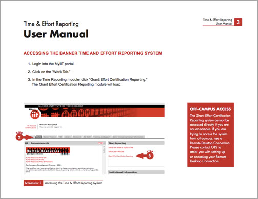
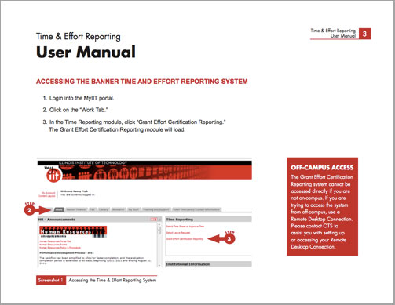

Below is a small sample from my public portfolio. Please contact me for more examples.


 



My personal methods condenses the process into 3-4 deceptively simple steps:
We always start by taking into account the meaningful everyday user experiences. ‘Real’ is not the same for everyone or for every project, so defining what it is is an ever-changing and often challenging process that involves first asking the right questions, doing the right research, and asking more questions.
It’s not a coincidence that functional design is usually very pleasing to the eye. Highly effective design makes the information it is transforming accessible and inviting as the content should be.
We bring it all together to make it happen, however possible because, well, otherwise, what’s the point?
Life is not stagnant and neither is the information or design trends that inform our everyday lives. Regular evaluations must be made to make sure that projects are real and pretty in the now. Design is never done.
{kind=link}